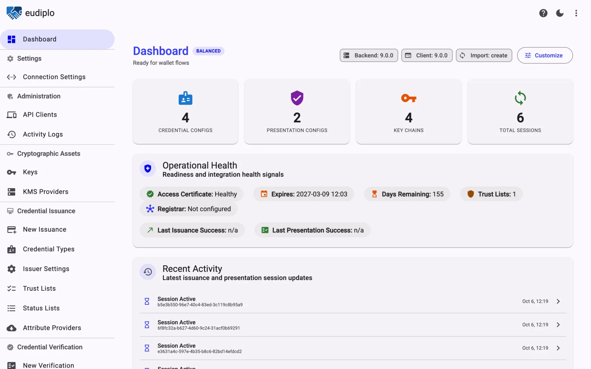

Personal data stays with you
The wallet encrypts its answer to a key your instance creates for that one request. It is decrypted on your server and goes straight to your backend.
Open source · Self-hosted · No SaaS
EUDIPLO runs on your own servers, between your application and your users' wallets. Ask for a proof of age or a verified identity, or issue credentials of your own. EUDIPLO runs the protocols, checks trust and revocation, and hands your backend a clean JSON result. The personal data never passes through anyone else's cloud.
How it works
This is the complete backend side of the age check above, with the TypeScript SDK or plain HTTP from any language. Everything below the waterline is what EUDIPLO did to answer it.
This is the complete backend side of the employee ID above, with the TypeScript SDK or plain HTTP from any language. Everything below the waterline is what EUDIPLO did to deliver it.
import { EudiploClient } from '@eudiplo/sdk-core';
const eudiplo = new EudiploClient({ baseUrl, clientId, clientSecret });
// Ask the customer's wallet for proof of age
const request = await eudiplo.createPresentationRequest({ configId: 'age-over-18' });
showQrCode(request.crossDeviceUri);
// Resolves once EUDIPLO has verified the answer
const session = await eudiplo.waitForSession(request.sessionId);
grantAccess(session.credentials);import { EudiploClient } from '@eudiplo/sdk-core';
const eudiplo = new EudiploClient({ baseUrl, clientId, clientSecret });
// Offer the employee ID with claims from your HR system
const offer = await eudiplo.createIssuanceOffer({
credentialConfigurationIds: ['employee-id'],
claims: { 'employee-id': { given_name: 'Lena', employee_no: 'E-4711' } },
});
showQrCode(offer.uri);
// Resolves once the wallet reports that it stored the credential
await eudiplo.waitForSession(offer.sessionId);
markIssued(employee);# Get a token for your API client
TOKEN=$(curl -s -X POST https://eudiplo.example.com/api/oauth2/token \
-d grant_type=client_credentials -d client_id=shop-backend \
-d client_secret="$CLIENT_SECRET" | jq -r .access_token)
# Ask the customer's wallet for proof of age
curl -s -X POST https://eudiplo.example.com/api/verifier/offer \
-H "Authorization: Bearer $TOKEN" -H "Content-Type: application/json" \
-d '{ "response_type": "uri", "requestId": "age-over-18" }'
# → { "uri": "…", "crossDeviceUri": "…", "session": "0b6f3a8e-…" }
# The verified result arrives at your webhook, or read the session
curl -s https://eudiplo.example.com/api/session/$SESSION \
-H "Authorization: Bearer $TOKEN"# Get a token for your API client
TOKEN=$(curl -s -X POST https://eudiplo.example.com/api/oauth2/token \
-d grant_type=client_credentials -d client_id=hr-backend \
-d client_secret="$CLIENT_SECRET" | jq -r .access_token)
# Offer the employee ID with claims from your HR system
curl -s -X POST https://eudiplo.example.com/api/issuer/offer \
-H "Authorization: Bearer $TOKEN" -H "Content-Type: application/json" \
-d '{ "response_type": "uri", "flow": "pre_authorized_code",
"credentialConfigurationIds": ["employee-id"],
"credentialClaims": { "employee-id": { "type": "inline",
"claims": { "given_name": "Lena", "employee_no": "E-4711" } } },
"webhookEndpointId": "hr-backend" }'
# → { "uri": "openid-credential-offer://…", "session": "5c1e9a72-…" }
# The wallet's confirmation arrives at your webhook{
"status": "completed",
"session": "0b6f3a8e-6d0c-4b8e…",
"credentials": [{
"id": "pid",
"values": [{
"vct": "urn:eudi:pid:1",
"age_equal_or_over": { "18": true }
}]
}]
}{
"notification": {
"id": "550e8400-e29b-41d4…",
"event": "credential_accepted",
"credentialConfigurationId": "employee-id"
},
"session": "5c1e9a72-3f0d-4c8e…"
}Not on TypeScript? Every instance serves its OpenAPI 3.1 description at /api/docs-json and an interactive Swagger UI at /api/docs. Call the API from any stack, or generate a client for Java, Python, Go or .NET. API reference →
You don't build them, test them against the conformance suite, or rewrite them when the specs move.
Issuing takes more. One call to POST /api/issuer/offer starts a full OpenID4VCI flow.
With your login in front. In the authorization code flow, EUDIPLO also runs pushed authorization requests, PKCE and the sign-in through Keycloak or any OpenID Connect provider. Claims can also come from your own API at the moment of issuance.
Self-hosted by design
EUDIPLO is software you run, not a service you rent. Install it on-premises, in your private cloud or in any EU data center. What your users share from their wallets reaches your systems and nobody else's.
The wallet encrypts its answer to a key your instance creates for that one request. It is decrypted on your server and goes straight to your backend.
Create signing keys in an HSM over PKCS#11, AWS KMS or HashiCorp Vault. They are generated as non-exportable, and every signature happens inside.
Requests name the exact claims, and selective disclosure keeps everything else in the wallet. An age check gets a yes or no, not a birth date.
Session data is deleted or anonymized after a retention period you set per tenant, 24 hours by default. Request logging is off unless you turn it on.
No analytics, license checks or update checks. Traces and metrics go only to an OpenTelemetry collector you run, or nowhere with OTEL_SDK_DISABLED=true.
Apache-2.0 and developed in the open. Your security team can read every line, and nothing depends on a vendor's uptime or pricing.
For service providers
EUDIPLO is multi-tenant. Hosting companies, identity providers and public IT service centers can run one installation for many customers. Each tenant has its own keys, certificates, trust lists, configurations, API clients and retention period, and every request is scoped to one tenant.
Your customers get wallet verification and issuance without running anything themselves, hosted where you choose, on code they can audit. espuni runs age verification for online platforms this way.
Tenants and access →Web client included
EUDIPLO comes with a web client that runs on your servers next to it. Your team sets up credentials and verification requests, tests them with a real wallet and follows every session, without writing code.

Prefer code? Everything the web client does is also available through the API and the CLI. To look around with sample data, run eudiplo demo and open localhost:4200. Demo sign-in →
Use cases
Each use case starts from a guide that ends in a working result.
Ask for "over 18" and nothing else. Platforms that must protect minors under DSA Article 28 get a yes or no, without a name or birth date.
age_over_18Fill in sign-up and KYC forms from the Personal ID that a Member State issued. No photo of an ID card, no manual review of typed-in data.
given_namefamily_namebirthdateaddressIssue employee IDs, student cards, memberships or tickets into the same wallet. Claims can come from your login or your own API, and you can revoke each credential later.
Test a wallet against a conformant issuer and verifier with real certificates, trust lists and status lists, in one installation.
Why now
eIDAS 2.0 makes the wallet a standard way to prove who you are online, everywhere in the EU. Services that rely on identity have to be ready to accept it.
eIDAS 2.0, Regulation (EU) 2024/1183, enters into force.
The first implementing acts fix the wallet's technical rules and start the clock.
Every Member State offers at least one EUDI Wallet to its citizens.
Banks, telecoms, transport, energy, health, education and very large online platforms must accept the wallet when users choose it.
A summary for orientation, not legal advice. Check the exact obligations and dates for your sector.
In production
The German EUDI ecosystem's playground for testing wallets and their interoperability.
Multi-tenant age verification as a service for platforms under DSA Article 28.
A public instance of the EUDIPLO web client.
Issuance and presentation, SD-JWT VC and mdoc.
Including the Digital Credentials API.
Including the Digital Credentials API.
mdoc over ISO 18013-7 Annex C.
Every change runs against the OpenID Foundation conformance suite for OpenID4VCI and OpenID4VP.
Hosted by LF Decentralized Trust and developed in the open. No license fees, no per-transaction pricing, no lock-in.
View on GitHub ↗Under the hood
EUDIPLO runs next to your application, on your infrastructure. It holds the keys, keeps the sessions and talks to the trust ecosystem, so your application doesn't have to.
Creates requests and offers through the REST API or the TypeScript SDK. Your team manages everything in the web client or the CLI.
Issuer, verifier and trust anchor in one service, with separate tenants for each organization or product.
Any wallet that follows the EUDI specifications, on the same device or by QR code from another screen.
HSM over PKCS#11, AWS KMS, HashiCorp Vault or the database
PostgreSQL, or SQLite for a single node
S3-compatible object storage or local files
Docker Compose or Kubernetes, with OpenTelemetry
Publishes and consumes lists of trusted issuers and verifiers
Access and registration certificates for your services
Keycloak or any OpenID Connect provider before issuance
Configuration as code
Each configuration is a JSON file with a published schema. Your editor autocompletes it, your CI validates it, and the CLI shows a plan before anything changes on a running instance.
eudiplo config validateCheck every file against its schemaeudiplo config planSee what an import would changeeudiplo config importApply it to a running instance{
"$schema": "https://eudiplo.dev/schemas/v3/PresentationConfigFile.schema.json",
"spec": {
"id": "age-over-18",
"description": "Proof of age for checkout",
"statusCheckMode": "strict",
"webhookEndpointId": "shop-backend",
"dcql_query": {
"credentials": [
{
"id": "pid",
"format": "dc+sd-jwt",
"meta": { "vct_values": ["urn:eudi:pid:1"] },
"claims": [{ "path": ["age_equal_or_over", "18"] }]
},
{
"id": "pid-mdoc",
"format": "mso_mdoc",
"meta": { "doctype_value": "eu.europa.ec.eudi.pid.1" },
"claims": [{ "path": ["eu.europa.ec.eudi.pid.1", "age_over_18"] }]
}
],
"credential_sets": [{ "options": [["pid"], ["pid-mdoc"]] }]
}
}
}Get started
From zero to a credential in your phone's wallet, on your own machine.
curl -fsSL https://eudiplo.dev/install.sh | bashnpm install -g @eudiplo/cli with Node.js 22.12 or later.
eudiplo demoWhat you need to know before EUDIPLO handles real credentials.